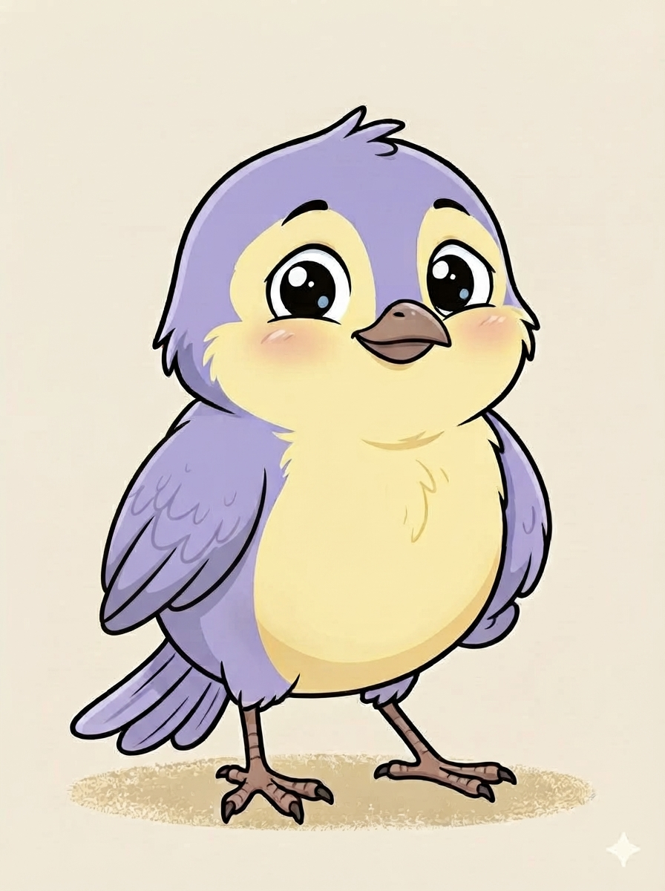

🙋
Juego 1
¿Quién soy?
Un juego para que niñas y niños hablen de sí mismos: lo que les gusta, lo que sienten y lo que los hace únicos.

¡Hola amiguitos!Para familias que cuidan con el corazón
Soy Serafín, una ave muy curiosa y siempre tengo preguntas para todo. Acompaño a mamás, papás y cuidadores a conocer mejor a sus niños y niñas a través de juegos cortos, amigables y confidenciales. ¡Acompáñame a resolverlas!
Gratis para empezar · Pensado para niñas y niños, guiado por un adulto de confianza
Quiénes somos
Nido Seguro es una plataforma web que usa trivias y juegos con base psicológica para ayudar a madres, padres y cuidadores a identificar, de manera temprana, posibles señales de alerta en el comportamiento de niñas y niños. No diagnosticamos: orientamos, acompañamos y, cuando hace falta, conectamos con ayuda profesional real.
Dar a cada familia una forma sencilla, cálida y sin alarmismo de abrir conversaciones difíciles, usando el juego como puente entre el niño y el adulto que lo cuida.
Con trivias diseñadas junto a psicólogos, que traducen comportamientos cotidianos en un puntaje fácil de entender, y una red de orientación profesional lista para acompañar el siguiente paso.
Confidencialidad, lenguaje cuidado para niñas y niños, y la certeza de que ninguna familia tiene que enfrentar sus dudas sola.
Nuestros juegos
Cada juego es una trivia corta con preguntas pensadas para niñas y niños, guiadas por un adulto. Al terminar, Serafín entrega un puntaje: si el resultado sugiere que sería bueno platicar con alguien más, te invitaremos amablemente a dejar tus datos para recibir orientación.
Un juego para que niñas y niños hablen de sí mismos: lo que les gusta, lo que sienten y lo que los hace únicos.
Exploramos juntos qué significa una amistad sana y cómo reconocer cuando algo no se siente bien con otra persona.
Un nuevo juego en camino para hablar de límites y cuidado personal de forma amigable.
Un juego para aprender a nombrar y expresar lo que sentimos. ¡Muy pronto con Serafín!
Por qué Nido Seguro
Nadie más ve las respuestas de tu familia. El puntaje es solo una guía, nunca una etiqueta.
Hablamos con niñas y niños en forma de juego, cuidando que la experiencia sea segura y cálida.
Cuando el puntaje lo sugiere, conectamos a la familia con especialistas, no la dejamos sola con la duda.
Preguntas frecuentes
Es una plataforma web con juegos y trivias que ayudan a madres, padres y cuidadores a conocer mejor el comportamiento de sus niñas y niños, identificando señales de alerta de forma temprana y amigable.
No. El puntaje es solo una guía orientativa. Nido Seguro no diagnostica: acompaña y, si es necesario, conecta con profesionales capacitados para dar un diagnóstico real.
Sí. Solo pedimos tus datos cuando tú decides dejarlos para recibir orientación, y los usamos únicamente con ese fin. Puedes leer más en nuestro aviso de privacidad en el pie de página.
Los juegos básicos son gratuitos. Más adelante ofreceremos reportes detallados y talleres opcionales para quienes quieran profundizar más.
Los juegos están pensados para niñas y niños en edad escolar, siempre acompañados de un adulto de confianza que pueda leer las preguntas y conversar sobre las respuestas.
Un paso más
Si después de jugar sientes que tu familiar necesita orientación, déjanos tus datos. Un miembro de nuestra red de apoyo se pondrá en contacto contigo de forma confidencial.